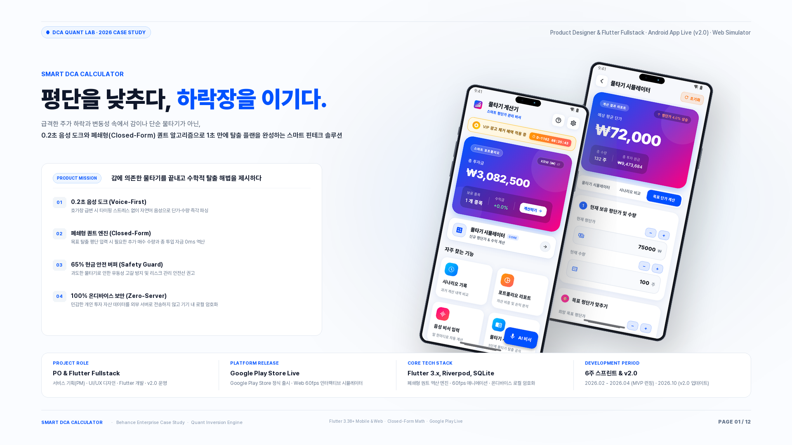

01 FINTECH & QUANT스마트 물타기 계산기 (Smart DCA)
국내 투자자의 비이성적 물타기를 방지하는 정밀 퀀트 평단가 계산 & 0.2초 음성 비서 플랫폼. 복잡한 수식 입력을 음성 도크와 역산 알고리즘으로 단순화하여 타이핑 인지 부하를 85% 감축시켰습니다.
✦ D1 리텐션 62.4%
✦ 타이핑 시간 85% 절감
✦ 100% 온디바이스 보안
✦ 12 Slides + 60fps Proto